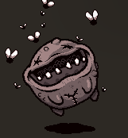

The Duke of Flies
The Duke of Flies is a leader added to the placenta.
Mode of action
1.The Duke of flies flies diagonally in the room and bounces against the wall, causing contact damage to the character.
2.Surround: the Duke of flies will often summon attack flies to surround themselves.
3.Attack: the Duke of flies occasionally summons large attack flies to the character.
4.Disperse: when the number of attack flies around the Duke of flies reaches a certain number, the Duke of flies will blow away the attack flies around itself, and the blown attack flies will move towards the character.
5.After the Duke of flies dies, many flies will be generated, and all attack flies surrounding the Duke of flies will move to the character.
| The Duke of Flies | |
|---|---|
|  | |
| Basic properties | |
| Blood volume | 110 |